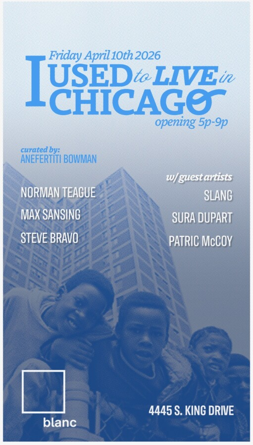

I Used to Live in Chicago
Opening during one of the city’s most celebrated moments for contemporary art, EXPO Chicago week, I Used to Live in Chicago is a multidisciplinary exhibition exploring memory, displacement, and cultural resilience across Chicago’s historically black neighborhoods.
Curated by Anefertiti Bowman, the exhibition brings together leading contemporary artists Norman Teague, Max Sansing, and Steve Bravo, alongside elder Chicago artists Sura Dupart, Tyrue “Slang” Jones, and Patric McCoy. Together, their work forms a layered, intergenerational dialogue rooted in lived experience, cultural memory, and the evolving realities of the city.
Through furniture and object-based design, mural-scale painting, sculptural forms, and graphic storytelling, the exhibition examines what it means to belong to a city in constant transformation and who retains access to space, identity, and legacy amid redevelopment and erasure.
At its core, I Used to Live in Chicago is both a love letter and a retrospective. It holds the emotional weight of change while honoring the communities that have long defined the city’s cultural fabric. We invite viewers into a space of reminiscence and nostalgia, of pickles and peppermint, of front porch conversations that felt like ceremony, of a time when ease lived more readily in our bodies and belonging felt less fragile. It gestures toward a Chicago many remember not as perfect, but as deeply alive, rooted in connection, creativity, and possibility. A city where basslines from passing cars became a shared soundtrack, and community existed not just in proximity, but in practice, embodied and lived in real time.
A Collective Archive
Positioned at the intersection of art, design, and cultural storytelling, the exhibition highlights the richness of black creativity that lives across the 77 community areas and over 200 neighborhoods, from the Plaza to the Brickyard, an epicenter of life, migration, and creative production.
The inclusion of elder artists serves as a critical anchor, grounding the exhibition in lived testimony and ensuring that histories shaped across generations remain present within contemporary discourse.
Public Programming + Cultural Activation